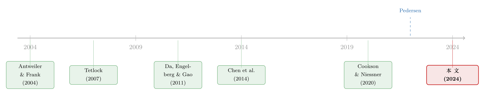

注意力是共同的，情绪是私人的——同一只股票，三个平台在说两件事
本文读的是 Cookson, Lu, Mullins & Niessner (2024, Journal of Financial Economics)：作者把 Twitter、StockTwits、Seeking Alpha 三大投资者社交平台放在一起对账，发现一个被以往「单平台」研究忽略的事实——大家在同一天关注哪些公司高度一致（注意力的第一主成分能解释 67% 的变动），但对同一只股票的情绪却各说各话（情绪的第一主成分只解释 39%，仅比纯粹各自为政的 33% 高出一丁点）。更妙的是，这两个信号对次日收益的预测方向正好相反：情绪预测正收益，注意力预测负收益。
1 一个被「单平台」掩盖的裂缝
先讲一个做实证的人都遇到过的尴尬。
过去十年，研究投资者社交媒体的论文像雨后春笋般冒出来：有人用 StockTwits 量「分歧」，有人用 Twitter 抓央行政策的市场反应，有人用 Seeking Alpha 检验「群众的智慧」。可是你把这些文章摞在一起读，会发现一件怪事——它们的结论常常对不上。同样是问「散户的关注到底是聪明钱还是噪声」，在一个平台上得到的答案，换个平台可能就反了过来。
为什么？最省事的解释是：这些论文用的自然语言处理算法 (natural language processing, NLP) 不一样，所以情绪打分的口径不同，结论自然漂移。可这只是技术细节。真正的问题更根本——这些平台，本来就不是一回事。
传播学里有一句老话，麦克卢汉 (McLuhan, 1975) 说「媒介即讯息」：一种沟通媒介的特征，会同时塑造它承载的内容和它产生的影响。Seeking Alpha 是长篇深度文章、有编辑把关；Twitter 限 280 字、但可以串成长帖；StockTwits 不能串帖，却从 2019 年起把字数上限提到了 1000，而且专做投资。用户也天差地别：Seeking Alpha 的作者是精挑细选的，Twitter 和 StockTwits 谁注册都能发。
于是一个自然的问题是：如果这三个平台从用户到设计都不一样，那它们生产的「社交信号」到底是同一种东西，还是三种东西？ 这正是本文要回答的核心。作者给这个信号起了个统一的名字——the social signal——然后做了一件以往没人做过的事：把三个平台的数据，按「公司—日」对齐，逐日对账。
2 把信号拆成两半：注意力与情绪
要对账，先得把模糊的「社交信号」拆成可度量的两个维度。本文的第一步，就是把它一分为二：注意力 (attention) 和 情绪 (sentiment)。
情绪好理解：一条帖子是看多还是看空。StockTwits 让用户自己给帖子打「bullish/bearish」标签，也用一套叫 MarketLex 的专有算法给每条帖子打 −1 到 +1 的分；Seeking Alpha 和 Twitter 的情绪则分别来自 Ravenpack 的事件情绪分 (Event Sentiment Score, ESS) 和 Social Market Analytics (SMA)。把一只公司 \(i\) 在 \(t-1\) 日收盘到 \(t\) 日收盘之间所有帖子的情绪求平均，就得到了「公司—日」级别的 \(\mathit{Sentiment}_{i,t}\)。
注意力则是「这一天有多少人在谈这家公司」。作者用一个很干净的相对份额来度量：
$$ \mathit{Attention}_{i,t} = \frac{\mathit{Messages}_{i,t}}{\sum_i \mathit{Messages}_{i,t}} $$
分子是公司 \(i\) 当天的帖子数，分母是该平台当天所有公司的帖子总数——也就是说，注意力衡量的是一家公司在当天「话题版面」里占的比重。
数据上，作者取了 2012–2021 这十年，锁定在 StockTwits 上单公司讨论最多的 1,500 家公司，并要求每个「公司—日」至少有 10 条 StockTwits 单公司帖。和 Ravenpack 的传统新闻、CRSP 的收益数据合并后，最终样本约 815,000 个公司—日观测。光 StockTwits 一家，原始数据就有 150 million 条帖、来自 800,000 多个用户。
有了这两把尺子，接着就可以问最关键的那个问题了。
3 反转出现：注意力高度共同，情绪却各说各话
作者对注意力和情绪分别做主成分分析 (principal component analysis, PCA)——把三个平台的信号丢进去，看第一主成分 (PC1) 能解释多少共同变动。
结果干净得近乎刺眼：
- 注意力的 PC1 解释了
67%的变动。也就是说，三分之二以上的注意力是「共同的」——某一天大家在不同平台上，谈的是同一批公司。 - 情绪的 PC1 只解释了
39%。这个数字本身不算低，但关键在于参照系：如果三个平台的情绪纯粹是各自独立的噪声，PC1 在统计上也会「碰巧」解释掉33%。换句话说，情绪的共同成分，只比「完全各说各话」高出区区 6 个百分点。
这就是全文的「金句」：人们在不同平台上关注同一批公司，却对同一只股票抱着彼此无关的看法。 注意力是共同的，情绪是私人的。
但实证人不会就此罢手。一个老练的读者立刻会反驳：会不会这只是 NLP 算法不同造成的假象？三个平台用了三套打分器，情绪对不上很正常啊。
作者的回应非常漂亮——他们退回到 StockTwits 平台内部，把用户分成影响者 (influencers)、专业者 (professionals)、新手 (novices) 等几类，在同一个平台、同一套算法下重做 PCA。如果情绪的低相关真是算法造成的，那么在算法完全相同的平台内部，不同用户群之间的情绪应该高度一致才对。
可结果还是老样子：用户类型之间，注意力的 PC1 高达 84%，情绪却依旧弱相关。算法被钉死了，差异依然在——这说明，就算把所有平台特征和 NLP 都统一，仅仅因为用户人群不同，情绪信号也注定对不上。 关注是社会性的趋同行为，看法则深植于各自的人群。
作者还顺手剔除了另一个内生性嫌疑：会不会这些共同成分其实是新闻、公司公告、股价驱动的？他们先把每个平台的注意力和情绪对传统新闻、8-K、盈余公告、滞后收益、波动率以及公司固定效应做回归，取残差之后再做 PCA（即「条件 PCA」）。结果与无条件 PCA 几乎一模一样——社交媒体里的共同信号，是独立于传统媒体的另一层信息。
值得一提的还有公司规模这条暗线：StockTwits 三分之二的热门公司是小盘股，而 Twitter 和 Seeking Alpha 更偏大盘。按规模分箱重做条件 PCA 后，无论大小盘，注意力都比情绪更「共同」；但大盘股在注意力和情绪上的共同性都比小盘股更强。这意味着，一个基于情绪的结论能不能跨平台推广，可能取决于小盘股在其中的分量有多重——这对解释文献里「结论打架」的现象，是一记直接的回应。
4 真正关键的一步：两个信号，方向相反
如果说前面是「描述」，那么本文最有冲击力的一步，是把这两个共同成分拿去预测次日异常收益。
作者把次日异常收益对情绪 PC1、注意力 PC1 回归，并控制传统媒体新闻、公司公告、滞后收益与波动率、以及 Google 搜索量 (Da et al., 2011)。结论是一对漂亮的镜像：
- 情绪的共同成分，预测次日正收益。
- 注意力的共同成分，预测次日负收益。
为什么方向会反？作者把收益拉长到 20 天来看，机制就浮出水面了。更正面的情绪，伴随更高的当日和 \(t+1\) 日收益，而且之后 20 天没有反转——这像是情绪里真的含有「关于基本面的信息」。而更高的注意力，同样伴随更高的当日收益，但随后 10 到 20 天出现部分反转——这更像是高关注日里的一次过度反应 (over-reaction)，事后被慢慢、部分地修正回去。
再往里挖一层：净散户买入 (net retail buying) 同时与当日的情绪和注意力正相关，但这种正相关只持续一到两天。把这几块拼起来，那对「相反的预测」就讲通了——情绪的正向可预测性来自它承载的信息，注意力的负向可预测性来自一次过度反应的渐进回吐。
（社交媒体把散户的关注和买入捆在一起、并能在短时间里掀起巨浪这件事，本博客此前评述 Cookson 等人的另一篇工作时也谈到过，参见《四天，一条推特，挤垮一家银行》。散户「去哪里、关注什么」本身有强烈的栖息地特征，可参见《散户的栖息地》。）
在三个平台里，StockTwits 的信号与共同成分对得最齐、对次日收益的解释力最好（尤其在注意力上）。这本身就说明：平台不是可以互换的容器。
5 用两个事件，把「为什么不同」钉死
到这里，本文其实已经可以收尾了。但作者还想回答一个更难的问题：平台之间的差异，究竟来自平台设计，还是来自用户人群？ 他们找了两个近乎天然实验的事件，把这两条路径分别钉死。
事件一：字数上限的改变（识别「平台设计」）。 2019 年 5 月 8 日，StockTwits 把单条消息上限从 140 字提到 1,000 字。作者发现，改版之后，StockTwits 的情绪对次日收益的预测力变强了；而且这个效果完全由变长的消息驱动——短消息和注意力的信息含量都没变。进一步看，专业用户的消息本就更有信息量，改版后他们写得更长，这就给出了一个干净的机制。与此同时，没受这次改版影响的 Twitter 和 Seeking Alpha，信号信息量纹丝不动。一个平台内部「让用户能更充分表达」的设计改动，确实改变了它生产的信息——这正是传播学预言的事。
事件二：GameStop（识别「用户人群」）。 2020 年，免佣交易和居家令叠加，美国散户经纪账户激增，StockTwits 涌入大量新用户。2021 年 1 月 GME 逼空之后，作者发现所有平台情绪的信息量都显著恶化：收益对情绪的敏感度下降了。但关键在于——这个下降集中在新用户（2020 年后加入）的消息上，而 2020 年前就在的老用户，其信号信息量在 2021 年 1 月后没有变化。
把两个事件并排看，会得到一个微妙的双重结论：字数上限事件支持「社交媒体不可互换」（平台特征确实重要）；可 GME 事件又表明，一个足够大的冲击会从一个平台外溢到所有平台。平台既各有其个性，又共享一个生态。
这两块证据合起来，正好坐实了第 3 节那个 PCA 结论的两条腿：差异既来自平台设计（字数上限），也来自用户人群（新手涌入）。
6 文献脉络
把这篇文章放回它生长的那条河流里，会看得更清楚。
最早的源头，是把「文本」变成「信号」的努力。Antweiler & Frank (2004) 问「网上股票留言板的喧哗，到底是不是噪声」；Tetlock (2007) 则把媒体的情绪量化，证明它能预测股市。接着，注意力这条线独立成型——Da, Engelberg & Gao (2011) 用 Google 搜索量「In search of attention」，给散户注意力找到了一把直接的尺子；Barber & Odean (2008) 更早就指出，被关注的股票会被散户买入。情绪与注意力，从此成了两条平行但很少交汇的支流。

到了社交媒体时代，研究开始扎进具体平台：Chen et al. (2014) 证明 Seeking Alpha 的荐股是有信息的；Cookson & Niessner (2020) 用 StockTwits 把投资者的「分歧」拆开看。但正如本文反复强调的，这些工作几乎都只盯着一个平台。Pedersen (2022) 的「Game on」把社交网络与市场的关系提到了理论高度，Bradley et al. (2024) 则发现 Reddit WallStreetBets 的「尽职调查」在 GME 之后变得不再有信息。本文站在这条脉络的交汇处——它既不是又一个「单平台」研究，也不是纯理论，而是第一次把三大平台对齐、把注意力与情绪同时拆开，量化它们的异同，并用平台设计与用户人群两条机制去解释这些异同。
7 评论与延伸（Q&A + 研究方向）
(a) 几个可能的疑问
Q：情绪 PC1 解释了 39%，听起来不低，凭什么说「情绪是私人的」？
关键不在 39% 本身，而在它的参照系。如果三个平台的情绪纯属各自独立的噪声，PC1 在数学上也会「碰巧」吃掉约 33% 的方差。39% 只比这个基准高 6 个百分点，意味着真正的「共同情绪」少得可怜。而注意力的 67% 远远甩开了同样的基准——对比之下，「情绪几乎是各说各话」的判断才站得住。
Q：会不会三个平台情绪对不上，只是因为 NLP 算法不同？
作者用一个平台内的检验把这条路堵死了：在 StockTwits 内部、用同一套算法比较不同用户群，注意力 PC1 仍高达 84%，情绪仍弱相关。算法完全相同，差异照旧存在——所以差异不可能全由 NLP 造成，用户人群本身就足以制造情绪分歧。
Q：情绪和注意力的收益预测方向相反，这不矛盾吗？
不矛盾，因为它们捕捉的是两种东西。情绪含有关于基本面的信息，所以预测次日正收益且 20 天内不反转；注意力更像是引发了一次过度反应，当日推高价格，随后 10–20 天部分反转，于是「预测」次日负收益。文献早就提示「不同类型的注意力有不同的收益含义」(Ben-Rephael et al., 2017; Barber et al., 2022)，本文把情绪与注意力放在一起，让这个对比格外清晰。
Q：GME 之后情绪信息量下降，是市场变了，还是人变了？
是「人」变了。下降集中在 2020 年后加入的新用户身上，而 2020 年前的老用户信号信息量没变。这说明不是整个市场结构突变，而是新进入者稀释了信号。这与 Bradley et al. (2024) 在 WallStreetBets 上的发现相互印证。
Q：样本只取 StockTwits 上讨论最多的 1,500 家公司，会不会有选择偏误？
有代价，但作者权衡得当：这 1,500 家虽只占全部 9,000 多家的一小部分，却涵盖了约 80% 的 StockTwits 消息量（从 150 million 降到 120 million）。要在「公司—日」层面稳定度量社交信号，必须有足够的帖量，否则注意力和情绪都噪声极大。代价是结论更偏向「被热议」的公司，对冷门小盘股的外推要谨慎。
Q：那条「大盘股共同性更强」的发现，对既有文献意味着什么？
它给「文献打架」提供了一个朴素的解释。既然 StockTwits 偏小盘、另外两家偏大盘，而共同性又随规模上升，那么一个基于某平台情绪得出的结论，能否推广，就取决于小盘股在其中的分量。换平台≈换了规模分布，结论自然可能漂移。
(b) 几个可能的研究问题与提案
1. 把「社交信号」搬到公司债/信用市场
【经济故事】股票有 StockTwits、Seeking Alpha，债券呢？信用市场以机构为主、散户稀薄，社交媒体上关于发债企业的情绪与注意力，是否同样「注意力共同、情绪私人」？若情绪含基本面信息，它应当先于信用利差变动而非次日股价。 【可行性】中。难点在于把 StockTwits 的 cashtag（针对股票）映射到发行人层面的债券，并与 TRACE 的利差数据对齐；识别上可借用本文的条件 PCA 框架，控制评级行动与新闻。数据可得但匹配工作量大。
2. 注意力—流动性的反向通道
【经济故事】本文显示高注意力日伴随过度反应与随后反转。一个自然推论是：注意力激增会暂时改变流动性供给——做市商面对散户的相关订单流，可能拉宽价差。能否用本文的注意力 PC1 去预测次日的买卖价差与深度变化？ 【可行性】高。注意力 PC1 数据作者已公开，配合 TAQ 或 Boehmer et al. (2021) 的散户订单流指标即可检验；识别上可用本文的两个事件（字数上限、GME）作为外生冲击做事件研究。
3. 外资持有人与「跨语言」的社交信号
【经济故事】本文三个平台都是英语世界的。对在美上市、却有大量海外关注的公司（如中概股），非英语社交平台上的情绪与注意力是否构成又一个「独立的私人成分」？外资持有比例高的公司，其海外社交情绪是否更能预测收益？ 【可行性】中到低。需要抓取多语言平台数据并做跨语言情绪打分，工程量大；识别上可用外资持股比例（如 13F、FactSet）做横截面切割。结论有趣但数据获取是真瓶颈，需诚实承认 doable 但成本高。
4. 字数上限实验的可推广性
【经济故事】StockTwits 2019 年放宽字数，让专业用户写更长、更有信息的帖子。其他平台若也调整表达约束（如 Twitter 从 140 到 280、再到长推），是否同样提升情绪信息量？这是检验「媒介即讯息」的天然系列实验。 【可行性】高。多个平台的字数政策变更日期是公开的，可叠成多事件 DiD；唯一要小心的是同期是否有算法或用户结构的并行变化，需要安慰剂检验。
8 我的判断
这篇文章最大的贡献，是把一个一直被「单平台」研究结构性地藏起来的事实摆上了台面：投资者社交媒体不是一个同质的「散户情绪」黑箱，而是注意力高度趋同、情绪却高度异质的拼图，且两者携带方向相反的收益信息。仅凭「注意力 PC1=67%、情绪 PC1=39%（基准 33%）」这一组对照，加上「同平台内用户间」的稳健性检验，就足以让人重新审视过去十年大量基于单一平台的情绪研究——这是一种「把别人结论的边界画出来」的贡献，价值不在于推翻谁，而在于解释了为什么大家会打架。两个市场事件（字数上限、GME）的引入，又把「平台设计 vs 用户人群」这对机制拆得相当干净，殊为难得。
对识别，我有两点保留。其一，收益预测的回归终究是相关性而非因果：情绪 PC1 与注意力 PC1 都是从残差中提取的统计构造，它们与次日收益的关系，仍可能被某个未被控制的、与社交活动同步的基本面冲击驱动——作者用条件 PCA 剥掉了新闻与公告，但「居家令期间散户行为的整体漂移」这类慢变量，未必能被固定效应完全吸收。其二，GME 事件虽是绝佳的外生冲击，但「新用户稀释信号」与「市场制度（如做市、限制交易）在同期变化」难以彻底分离，作者用「老用户不变」做对照已是上策，但仍是间接证据。
后续我最想看到三件事：一是把这套「注意力—情绪」分解搬到信用市场，看债券投资者的社交信号是否同样劈成两半；二是把注意力 PC1 直接对流动性指标回归，验证「过度反应—反转」是否走的是做市商风险预算这条道；三是一个更长的样本——本文止于 2021 年，而 GME 之后散户生态仍在剧变，再加三年数据，或许能看清「信号被稀释」究竟是一次性事件，还是结构性的新常态。
参考文献
- Antweiler, W., & Frank, M. Z. (2004). Is all that talk just noise? The information content of internet stock message boards. Journal of Finance 59(3), 1259–1294.
- Barber, B. M., Huang, X., Odean, T., & Schwarz, C. (2022). Attention-induced trading and returns: Evidence from Robinhood users. Journal of Finance 77(6), 3141–3190.
- Barber, B. M., & Odean, T. (2008). All that glitters: The effect of attention and news on the buying behavior of individual and institutional investors. Review of Financial Studies 21(2), 785–818.
- Ben-Rephael, A., Da, Z., & Israelsen, R. D. (2017). It depends on where you search: A comparison of institutional and retail attention. Review of Financial Studies 30(9), 3009–3047.
- Boehmer, E., Jones, C. M., Zhang, X., & Zhang, X. (2021). Tracking retail investor activity. Journal of Finance 76(5), 2249–2305.
- Bradley, D., Hanousek Jr., J., Jame, R., & Xiao, Z. (2024). Place your bets? The value of investment research on Reddit's WallStreetBets. Review of Financial Studies 37(5), 1409–1459.
- Chen, H., De, P., Hu, Y. J., & Hwang, B.-H. (2014). Wisdom of crowds: The value of stock opinions transmitted through social media. Review of Financial Studies 27(5), 1367–1403.
- Cookson, J. A., Lu, R., Mullins, W., & Niessner, M. (2024). The social signal. Journal of Financial Economics 158, 103870.
- Cookson, J. A., & Niessner, M. (2020). Why don't we agree? Evidence from a social network of investors. Journal of Finance 75(1), 173–228.
- Da, Z., Engelberg, J., & Gao, P. (2011). In search of attention. Journal of Finance 66(5), 1461–1499.
- McLuhan, M. (1975). Understanding Media: The Extensions of Man. Routledge & Kegan Paul.
- Pedersen, L. H. (2022). Game on: Social networks and markets. Journal of Financial Economics.
- Tetlock, P. C. (2007). Giving content to investor sentiment: The role of media in the stock market. Journal of Finance 62(3), 1139–1168.